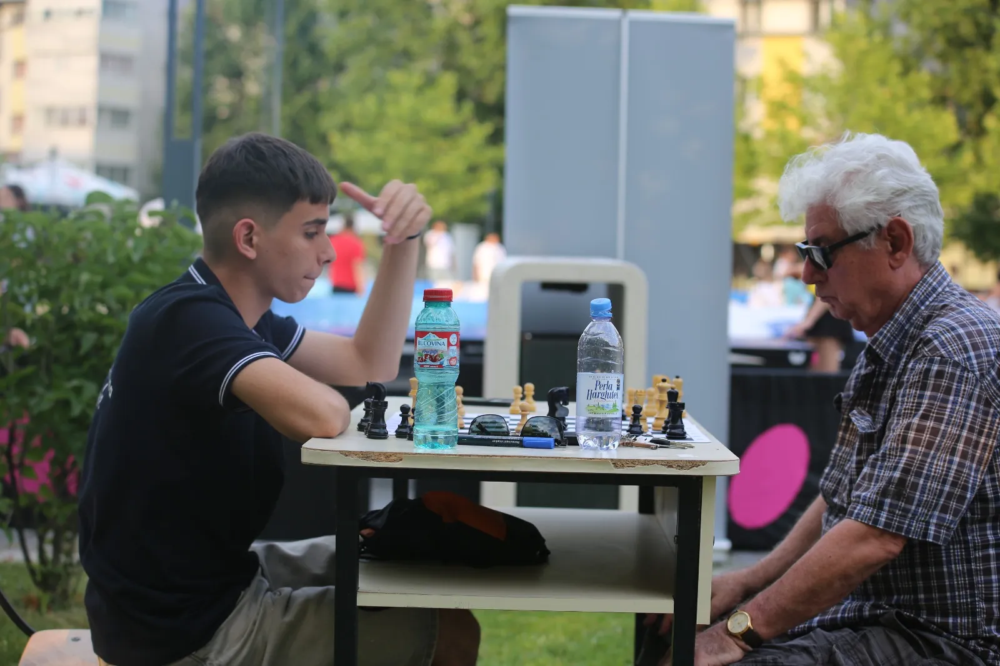
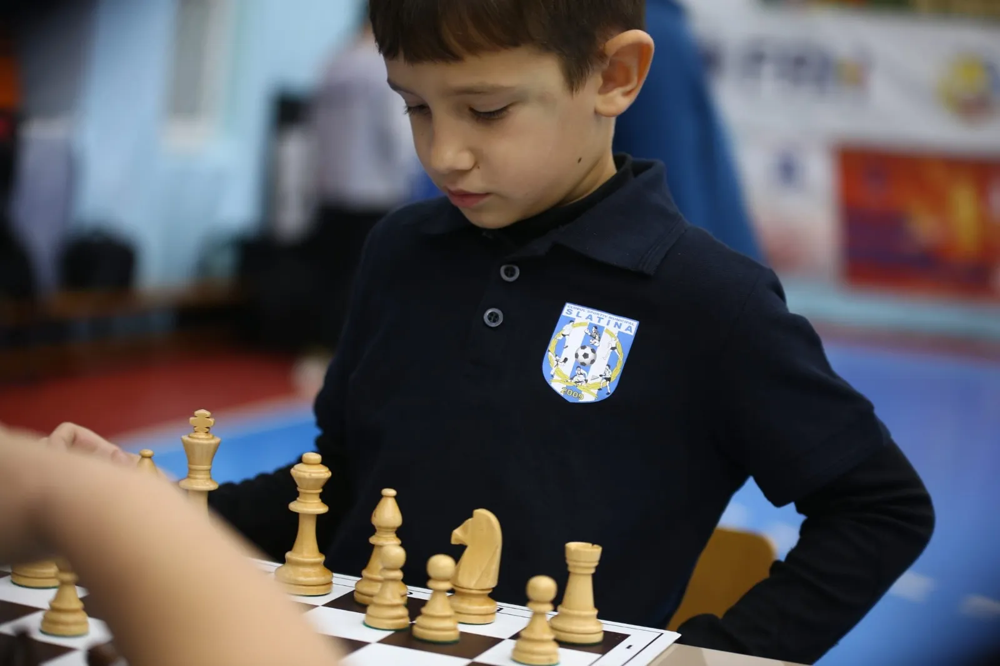
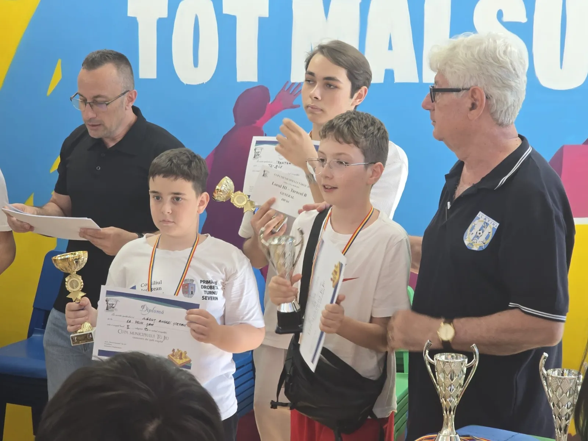
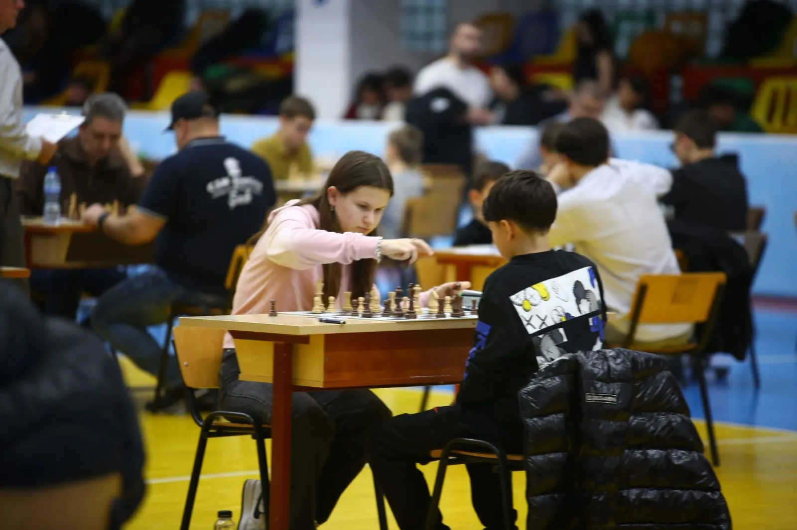
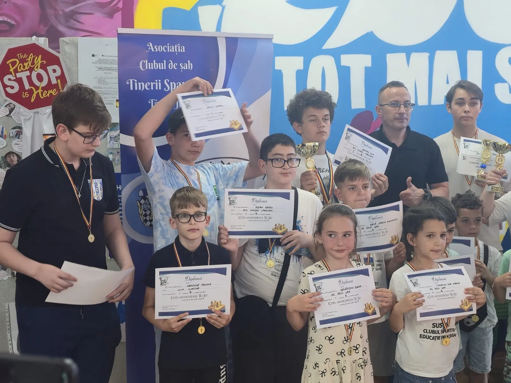
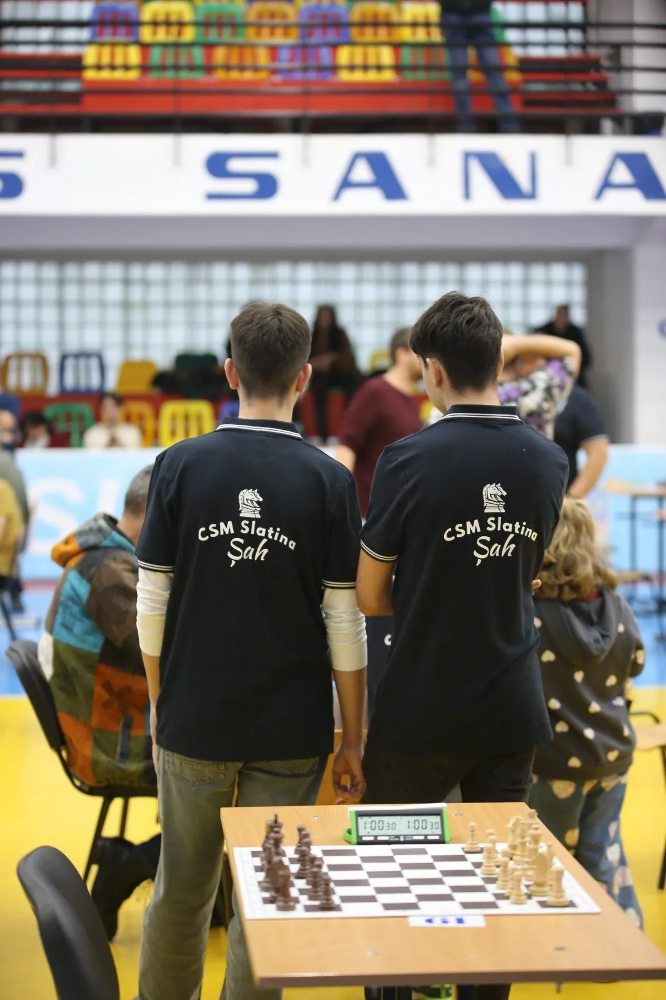
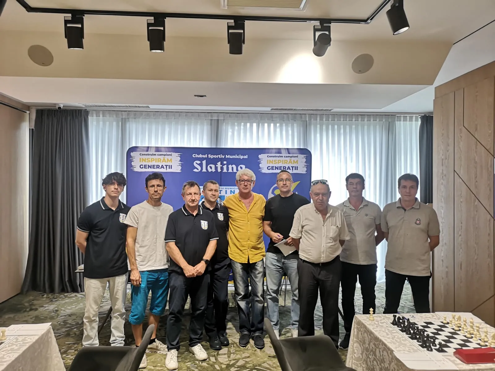
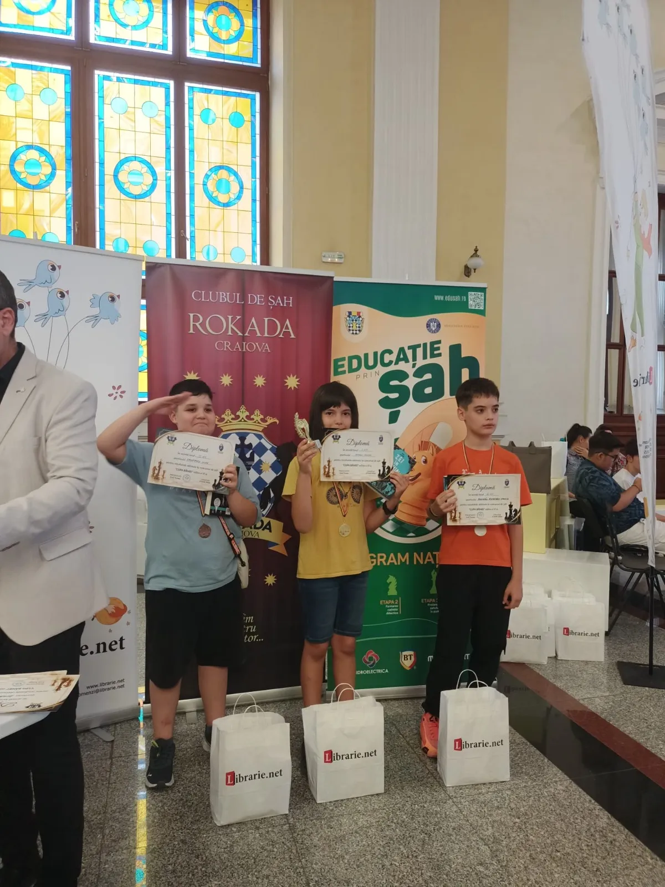
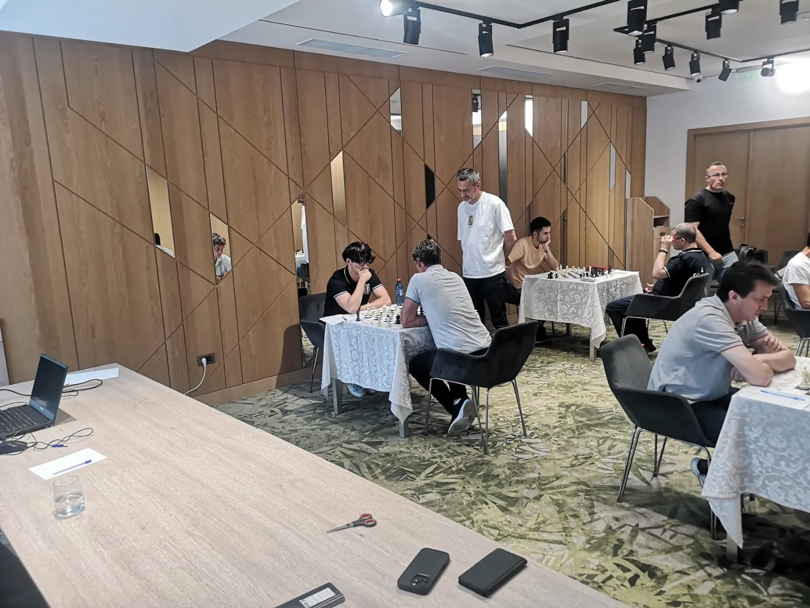

Șah
Sportul minții — strategie, răbdare și concentrare, de la primele mutări la turnee.
Șah la CSM Slatina
Șahul antrenează exact mușchiul pe care îl folosești toată viața: gândirea. La masa de joc, copiii Slatinei învață să planifice, să anticipeze și să rămână calmi când poziția se complică.
De la primele mutări la partidele de turneu, grupele sunt deschise tuturor vârstelor. Micii șahiști ai clubului își încearcă forțele în concursuri locale și naționale, iar tabla de șah îi însoțește și în aer liber, la evenimentele orașului.
Vino la un antrenament →Unde ne antrenăm
La sediul clubului — contactează secția pentru locația grupelor.
Program antrenamente
Programul grupelor este stabilit la începutul fiecărui sezon. Contactează secția pentru orarul curent.
Înscrieri
Telefon: 0349 738 657
E-mail: csmslatina@yahoo.com
Secția în imagini








